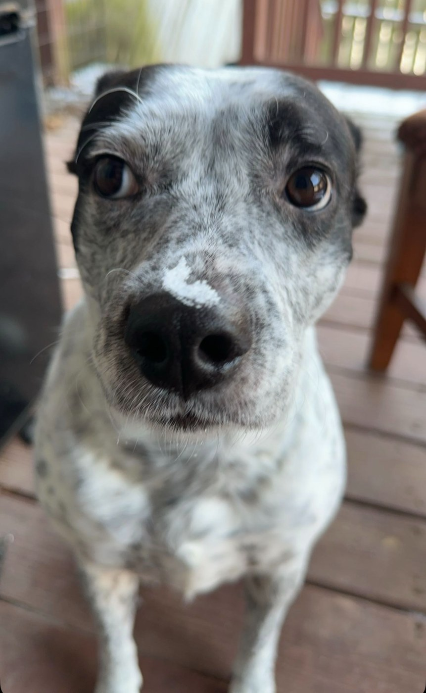

Small dog.
Big presence.
Meet Kitty. A scholar, a window-side commentator, and the proud owner of a smile you can almost smell through the screen.
Behold the photo album ↓
VERY GOOD
DOG
The Kitty dossier.
Everything you need to know about the dog behind the dot com.
February 11, 2020
That’s 2/11/2020. Mark your calendar.
Her breath smells like a 2000’s Wal-Mart seafood section.
The last four of her social is 8008.
A master’s degree in Early Morning Barking out the Window from Stinky Dog University.
The mitochondria is the powerhouse of the cell.
Many faces of Kitty.
Some glamour. Some teeth. A lot of personality. Click any photo for a closer look.
More friends.
More happy tails.
Kitty has her own website. Plenty of other dogs and cats are still looking for their people. The Humane Society of Pulaski County in Little Rock helps animals in Central Arkansas find loving homes.
Visit their official website to explore adoption, volunteering, and ways to support their work.
Humane Society of Pulaski County ↗